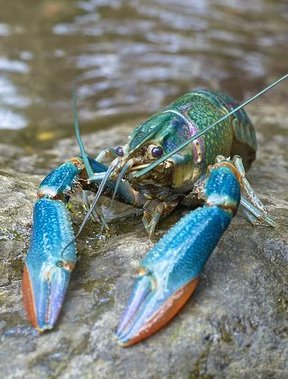

E
Ecrevisse
Aussi appelé Zabitan, elle est caractérisé par ses très longues pinces et sa taille qui peut dépasse celle d'une jeune langouste. Il est difficile à élever en bassin à cause de son agressivité et de son aptitude à s'enfuir par voie de terre vers le cours d'eau le plus proche.
Il est très prisé culinairement mais est souvent remplacé dans les assiettes
